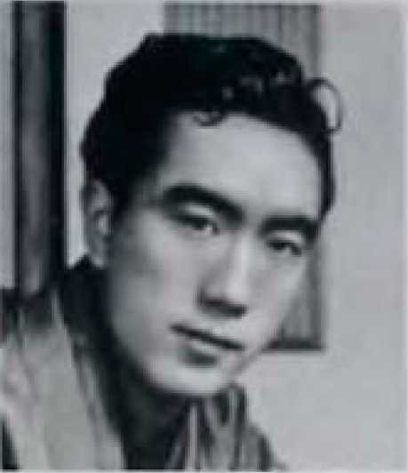

Mişima, Japon edebiyatının dünyada en tanınmış yazarı değil yalnızca. XX. yüzyıl edebiyatının yetiştirdiği büyük bir deha.
Yukio Mişima, XX. yüzyıl Japon edebiyatının hırçın çocuğuydu. Nobel Ödülü adayları arasında sık sık adı geçtiği halde aşırı milliyetçi, narsist, anti-hümanist nitelemeleriyle suçlandı. Ancak bu eleştirilerin temelinde, yazarın gereğince anlaşılamamış olması vardır. Mişima, İkinci Dünya Savaşı’nda Japonya’nın yaşadığı dramatik yıkım sırasında yitip giden bir kuşağın haykıran sesidir. Yazarın yaşamı, bu kayıp kuşağın kendini yeniden keşfetmesinin öyküsüdür.
Mişima, Japon savaşçı sınıfının “hiçlik”e dayalı felsefesi ile yazarlığını ustalıkla birleştirir. 25 Kasım 1970 günü canlı yayın yapan kameralar önünde geleneksel Japon yöntemiyle karnını deşerek intihar etmesi de, aynı zamanda usta bir oyun yazarı olan Mişima’nın yaşamını canlı sahne performansı ile sonlandırdığı şeklinde değerlendirilebilir.